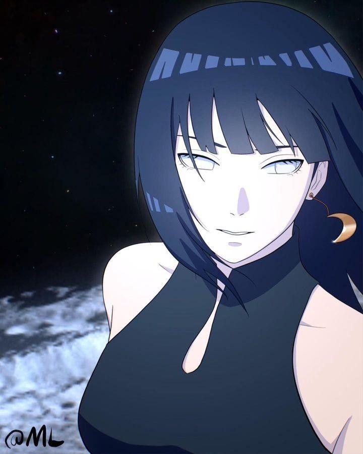
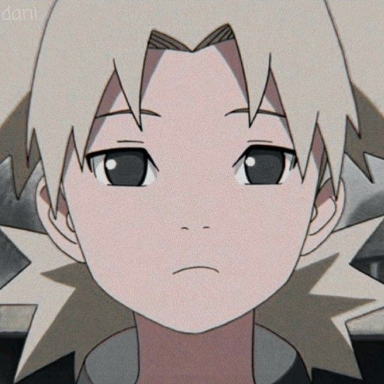
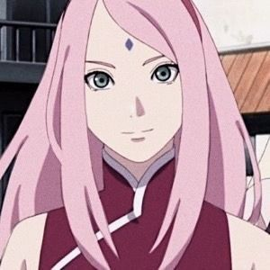
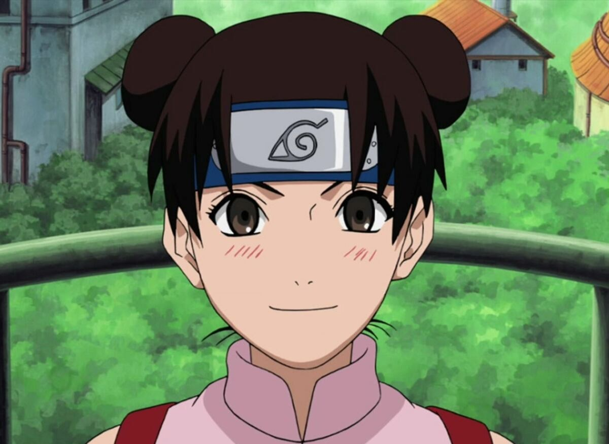
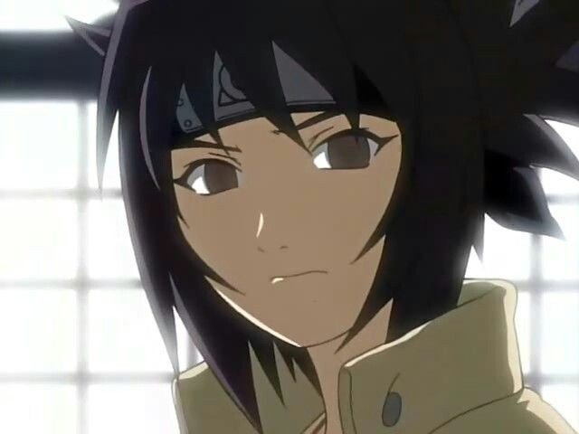
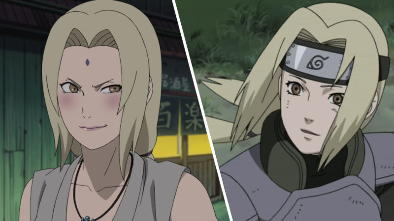
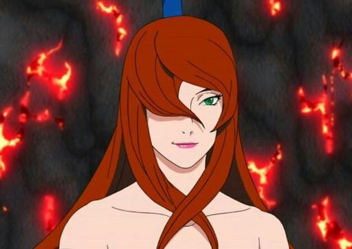

Naruto
| Naruto | Akatsuki | Kunoichis |
| Hinata | Temari | Sakura | Tenten | Anko | Tsunade | Mei |
|---|---|---|---|---|---|---|
|  |  |  |  |  |  |  |
| conocida por ser una kunoichi de la aldea de Konoha y miembro del Clan Hyūga. Inicialmente tímida, su carácter se desarrolla a lo largo de la serie, convirtiéndose en una ninja fuerte y segura de sí misma. | Una kunoichi talentosa de la Aldea Oculta de la Arena. Es una ninja estratega, habilidosa en el combate a larga distancia y conocida por su dominio del Elemento Viento, especialmente con su abanico gigante | Miembro del Equipo 7 junto con Naruto Uzumaki y Sasuke Uchiha, y, después de su entrenamiento con Tsunade, una ninja médica de élite y la Jefa del Departamento Médico de Konoha. | Su especialidad radica en el manejo de armas ninja, las cuales guarda en un pergamino que se abre para el combate. Es conocida por su personalidad alegre y su interés en las armas, además de ser una ninja muy rápida entre sus compañeros. | Conocida por ser una Jōnin de Konohagakure y una ex alumna de Orochimaru. Es una ninja experimentada con un sello maldito y una personalidad impulsiva y ruidosa. | Tsunade es una kunoichi de la aldea oculta de Konoha y uno de los legendarios Sannin. Es conocida por ser la mejor ninja médico del mundo y una de las kunoichis más fuertes. También es la nieta del Primer Hokage, Hashirama Senju. | Es la Quinta Mizukage (líder de la aldea), conocida por su gran fuerza y habilidades en el uso del agua. Su apariencia es la de una mujer hermosa, con cabello largo rojizo y una expresión seria |